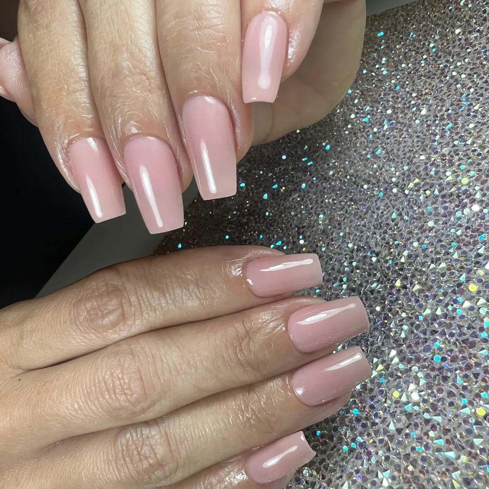

Servicios
Servicios pensados como experiencias de cuidado para uñas, cabello y ocasiones especiales.
La propuesta combina estética, escucha y una ejecución cuidada para que el resultado se sienta natural, limpio y alineado contigo.
Servicio destacado
Ritual de uñas con detalle, armonía visual y un acabado que acompaña tu día a día.
Desde manicure y maquillaje de uñas hasta nail art y mantenimiento, cada paso se trabaja con la intención de que manos y estilo se sientan cuidados sin exceso.
- Diseños sutiles o personalizados según tu referencia.
- Asesoría para mantenimiento y continuidad del resultado.
- Un enfoque visual limpio, delicado y favorecedor.

Menú principal
Una selección de servicios para sentirte cuidada de forma integral.
Antes de reservar
Una cita bien diseñada empieza con una conversación clara.
Si tienes una idea, una referencia o una ocasión especial, podemos ayudarte a convertirla en el servicio más adecuado para ti.
Cuando ya sabes cómo quieres sentirte, reservar debería ser la parte más simple.
Usa el formulario de citas o escríbenos por WhatsApp para coordinar disponibilidad y detalles.